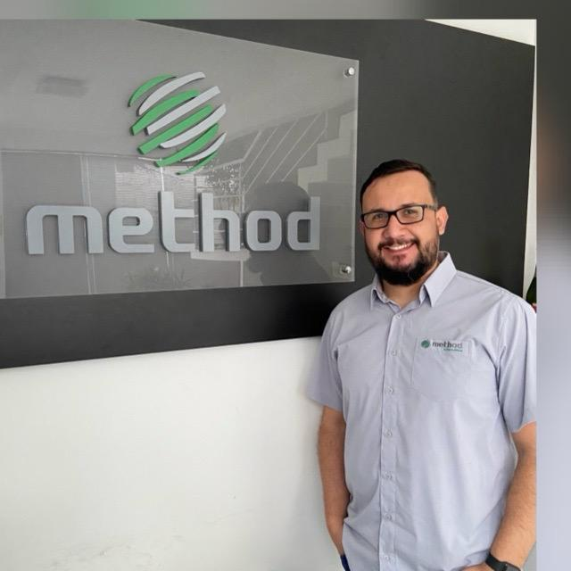

Desenvolvimento Web
- HTML5
- CSS3
- JavaScript
- Node.js
Portfólio acadêmico e profissional
Analista de Implantação e Suporte com experiência em sistemas de varejo, atendimento ao cliente, treinamentos, documentação e transição para desenvolvimento de software.

Quem sou
Sou Jean Padilha, profissional com mais de 18 anos de experiência em atendimento e suporte a usuários de sistemas, especialmente nos segmentos de varejo, crédito, financeiro e fiscal.
Atuei em implantação de novos clientes, treinamentos, instalações, adequações de sistemas, elaboração de manuais e participação em auditorias ISO 9001/20000. Atualmente curso Análise e Desenvolvimento de Sistemas e venho ampliando minha atuação para desenvolvimento, produto e melhoria contínua de soluções digitais.
Tecnologias dominadas
Projetos em destaque
Site pessoal desenvolvido para apresentar formação, experiência, tecnologias e projetos acadêmicos.
Abrir página do projetoAplicação web acadêmica para consultar dados de empresas brasileiras por CNPJ, usando uma API pública e uma interface objetiva para visualização das informações.
Abrir página do projetoAplicação web para controle de despesas pessoais, com autenticação, categorias, dashboard, filtros e gráficos interativos.
Abrir página do projetoExperiência
Suporte interno e externo a usuários, implantação de novos clientes, treinamentos, instalação e adequação de sistemas. Atuação em transição para Product Owner, contribuindo com levantamento de requisitos de clientes e melhoria de processos.
Atendimento e suporte aos usuários via Service Desk, plantões 24/7, elaboração de manuais e informativos, treinamentos de implantação, liderança de equipe e participação em auditorias ISO 9001/20000.
Experiência em vídeo
Apresento o eFator, o ERP da Method Sistemas: uma solução de gestão completa, desenvolvida para entregar alta performance ao varejo.
Este vídeo mostra um pouco da minha atuação em consultoria e do sistema que apoio na rotina dos clientes.
Assistir no YouTubeFormação
Certificações
Contato
Estou disponível para oportunidades, projetos acadêmicos e conexões profissionais na área de tecnologia.